● ● ●
一、舞蹈，是对生命的审美
作为一个博主，我一直有两个爱好：一个是看机器人，另一个是看小姐姐跳舞。
所以这些年机器人开始集体跳舞以后，我的两个爱好终于实现了历史性的统一。
当然，舞蹈是一种非常复杂的艺术。服装、造型、道具、灯光、音乐、编舞，任何一项做好了，都可以改变整场演出的效果。
但如果我们讨论的是人形机器人，这些其实不是最核心的问题。
衣服可以穿一样的，灯光可以打一模一样的，音乐没有区别，甚至编舞动作也完全可以照着人来设计。
真正一眼就能看出来的差距，是：
它怎么动。
同样一个转身，同样一次抬腿，同样一个摆臂，人做出来和机器人做出来，感觉就是不一样。
所以这篇文章想先把其他东西放在一边，只看一件事：
运动能力。
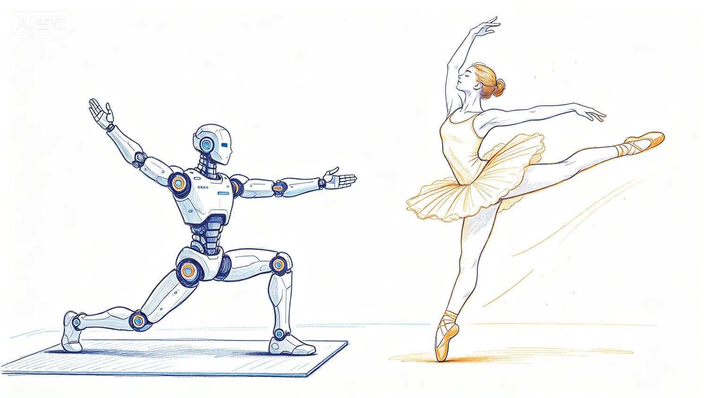
同一个人形机器人跟舞者做同样的转身抬腿，运动质感完全不同
2025 年，因为赞助 IROS，我参加晚宴，第一次在现场看到机器人和杭州的小姐姐一起跳舞。现场当然很热闹，记者也看得情绪高涨。机器人会跟着音乐抬手、迈步、转身，该做的动作基本都做了。
但如果旁边真的站着几个会跳舞的小姐姐，区别还是太明显。
小姐姐是在跳舞。
机器人更像是一群非常认真的学生，在做广播体操。
手该抬的时候抬，腿该迈的时候迈，节拍甚至也没有错，可你就是觉得：一言难尽。
更有意思的是，我们甚至不需要懂机器人控制，不需要知道什么强化学习、MPC，也不需要看关节参数表。一个普通人看上几十秒，大概就能感觉到：这个动作轻不轻，顺不顺，有没有力量，是不是累了，甚至是不是快摔了。
为什么？
因为舞蹈本来就不只是动作。
舞蹈，是人对生命的一种审美。
闻一多在《说舞》中说，舞是生命情调最直接、最实质、最强烈、最单纯而又最充足的表现。
这件事如果再往远古想一点，就更有意思了。
原始社会里，一群人围着火跳舞，当然可以是祭祀、庆祝和群体活动，但舞蹈也天然适合展示一个人的身体状态。脸长得怎么样，站在那里还可以修饰；一个人身体到底好不好，一动起来却很难藏。
有没有力量，有没有耐力，身体是否协调，平衡好不好，反应快不快，有没有伤病，跳上一会儿，大概都能看出一点。
所以远古时代的集体舞蹈，在某些求偶和社交场景里，也可以被理解成一种非常古老的"动态体检"。
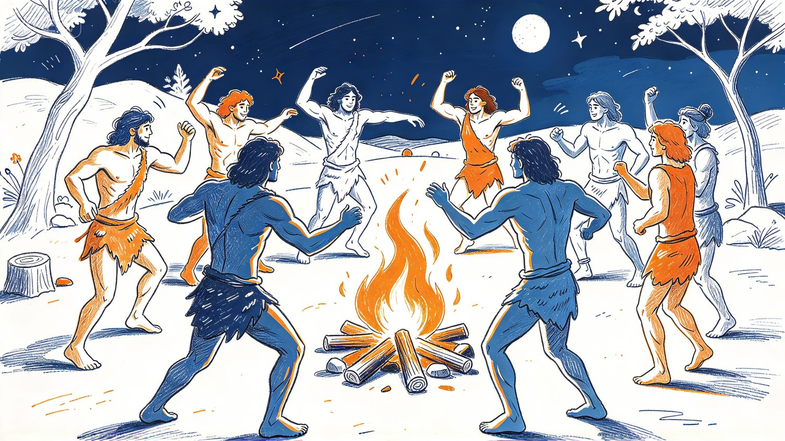
远古篝火旁围舞的人群，舞蹈作为生命力的展示
看一个人跳舞，也是在看：
这个生命健康不健康。
强壮不强壮。
协调不协调。
有没有旺盛的生命力。
这可能也是为什么人类会如此自然地把舞蹈与青春、健康、力量和美联系在一起。
英文里的 animate 也很有意思。它来自拉丁语 anima，与生命、呼吸、灵魂有关。所谓 animation，最原始的意味就是让一个东西"活起来"。
一个东西静静地放在那里，我们把它当成物体。
一旦它自己动起来，我们马上开始感受到：
它是不是活的？
所以跳舞看起来只是审美，实际上可能是一场非常古老的考试。
它考的是：
这个生命，究竟怎么样。
我们都觉得小姐姐跳舞更好看。
可这种说不清、道不明的审美感觉里，藏着的也许正是生命漫长进化中积累下来的一种深层智慧。
我们以为自己只是在看舞，其实大脑同时在判断力量、健康、协调、平衡、意图，以及一个生命体究竟有多会使用自己的身体。
这么说起来，看小姐姐跳舞还真不一定是一项肤浅的娱乐活动。
它甚至可以算是一种高级的智力活动。
● ● ●
● ● ●
二、究竟什么是"翩若惊鸿，婉若游龙"
要说中国人觉得什么样的动作最好看，我脑子里第一个冒出来的还是《洛神赋》：
翩若惊鸿，婉若游龙。
曹植眼前明明是一个女人，怎么看着看着，突然看见了一只鸟？
而且还不是一只好端端停在树枝上的鸟。
偏偏是：
惊鸿。
接下来又看到了龙。
洛神没有长翅膀，也没有变成长条形，所以这种相似显然不是外形。
真正相似的是：
运动。
或者说得再深一点，他看到一个人在运动，却从中体验到了鸟在空气里飞行的感觉。
这种审美并不是中国人独有。
中国人讲"惊鸿"，朝鲜传统舞蹈里有鹤舞，俄罗斯芭蕾最著名的形象之一是《天鹅湖》。
民族不同，鸟也不同，但大家似乎都喜欢那一类东西：腿长一点，脖子长一点，翅膀大一点，最好还能飞。
而中国人还嫌普通的鸿不够。
一定要：
惊鸿。
因为一只鸟好端端飞的时候，运动还比较容易预测。
一旦受到惊吓，运动就变了：
突然加速。
突然转向。
忽高忽低。
仿佛要失去平衡，又突然稳定下来。
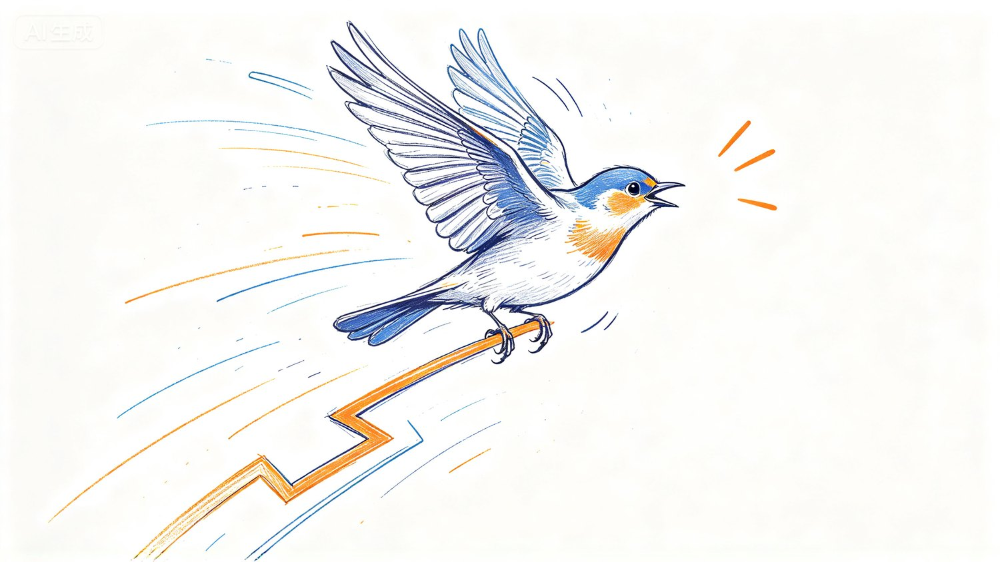
一只受惊的鸟在空中急转变向，轨迹忽高忽低
所以《洛神赋》后面紧接着还有：
动无常则，若危若安；
进止难期，若往若还。
你以为她要倒，她没有倒。
你以为她要往前，她突然回来。
你以为她还要继续转，她忽然停了。
为什么这种东西好看？
因为人看运动的时候，其实根本不只是在看轨迹。
眼睛看到一只鸟从 A 点飞到 B 点，但大脑同时在猜很多看不见的东西：
它有多重。
惯性有多大。
空气怎样托着它。
它用了多大的力。
下一秒会飞向哪里。
换句话说：
眼睛看到的是运动，大脑看到的是运动背后的物理世界。
心理学里有一个很经典的研究方向，叫 biological motion，也就是"生物运动"。
研究者不需要让你看到完整的人，只需要在主要关节上放几个亮点，把身体藏进黑暗里。这些点一运动起来，人很快就能看出来：
这是人在走。
这是人在跑。
这是一个人在做某种动作。
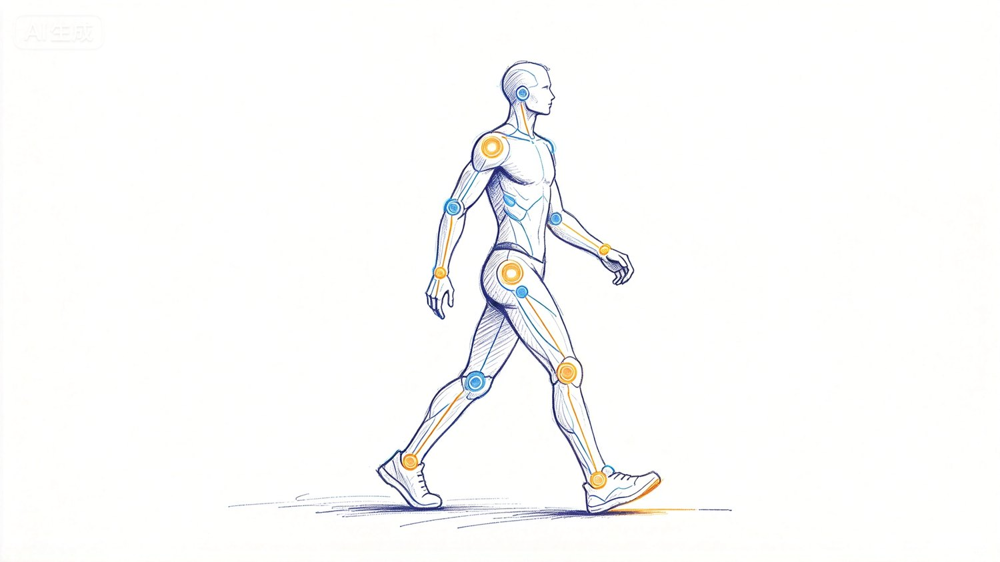
黑暗中仅凭几个关节点亮光，人脑就能识别出动作
我们平时也经常会说：
这个人腿疼。
这个人累了。
这个人没力气了。
这个人走路很轻快。
我们没有测他的肌电，也没有测他的关节扭矩。
就是：
看出来了。
再进一步，人看别人动作时，好像不仅能看到"他运动到了哪里"，还会感觉"他是怎么发力的"。
这个动作是腿蹬出来的。
这个转身是腰带起来的。
肩膀有没有放松。
这个人是不是已经没有余力了。
所以人类的模仿能力也很神奇。
我们看别人做动作，并不是简单复制关节轨迹，而像是在自己的身体里偷偷把这个动作重新做了一遍。
舞者轻盈，我们也会感觉自己轻了一点。
舞者突然爆发，我们也会仿佛感觉身体里多了一股力量。
所以我越来越觉得：
高级的审美，一定建立在高级的感知之上。
如果用今天 AI 最流行的话来说，这其实很像：
World Model，世界模型。
我们从已经看到的运动，反向推测一个看不见的世界：
它的质量是多少。
受到了什么力。
惯性有多大。
处在怎样的环境里。
然后我们开始预测：
下一秒会怎样？
如果实际发生的事情和预测差不多，我们会觉得：
自然。
如果它突然超出了预测，却又没有离谱到让我们觉得不可能：
我们会觉得：
惊喜。
所以好的舞蹈不是完全不可预测。
完全不可预测，那叫乱动。
好的舞蹈，是让你不断预测，又不断比你的预测多走半步。
这就是：
若危若安，若往若还。
Moonwalk 也是类似的东西。
脚底实际发生的运动是一回事，而视觉系统根据它推测出来的物理过程却是另一回事。
所以"翩若惊鸿"并不只是一句漂亮的文学比喻。
它描述的可能是一件非常具体的事情：
我明明看见一个人在地上跳舞，却在自己的身体里体验到了一只鸟在飞。
● ● ●
● ● ●
三、因为有力，所以显得毫不费力
小姐姐毕竟不是鸟。
她没有长翅膀，也没有生活在月球。
质量没有突然少掉一半，地球重力也没有因为她跳得漂亮就暂停营业。
为什么她能让你觉得：
好轻。
好像马上就要飞起来了。
从最简单的动力学来说，可以写成：
ma = F − mg
质量 m 没变。
重力 mg 也没变。
真正能够主动改变的，是力 F。
人不能真的让自己的质量减少一半，也不能把地球重力调低，但可以通过更强、更精确的力，让身体获得更大的加速度。
而舞蹈里很多真正好看的动作，恰恰都有一个共同特点：
高加速度。
如果借用战斗机的说法，可以说有一点"高 G"的感觉。
突然起跳。
突然停住。
高速旋转以后忽然改变方向。
身体已经明显倒向一边，却在最后一瞬间拉回来。
这些动作的共同点，就是速度在非常短的时间里发生很大的变化。
按照我们平时对物理世界的经验，一个东西越容易被加速、减速、改变方向，我们就越容易觉得：
它很轻。
一张纸为什么看起来轻？
因为风稍微一吹，它就变了方向。
一片羽毛为什么显得轻？
因为一点点外力，就足以让它不断改变运动状态。
而一个优秀的舞者，可以依靠自己的力量，让一个几十公斤的真实身体也表现出类似的运动特征。
快速起。
快速停。
突然变向。
高频变化。
于是观众的大脑会无意识地产生一个错觉：
这个身体好像没有那么重。
甚至：
这个世界的重力好像也没有那么大。
所以舞者制造的并不是低质量。
她制造的是：
低质量的视觉效果。
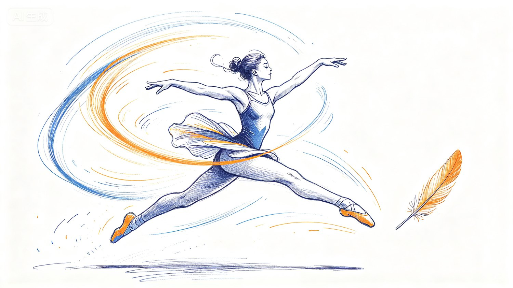
舞者以极强的力量实现快速启动与急停，视觉上却像羽毛一样轻
于是这里出现了一个非常反直觉的事实：
越显得轻盈，往往越需要力量。
看起来越不费力，实际上可能越费力。
这也是为什么很多舞蹈演员看起来非常苗条，却绝不等于瘦弱。
恰恰相反，优秀舞者通常拥有很强的下肢、核心力量和全身控制能力。
舞蹈真正需要的并不是单纯地"体重越小越好"，而是在合适的体重下，拥有尽可能强的力量和控制能力。
也就是：
力量 / 体重。
体重大，当然也可以完成同样的动作。
问题不是"能不能做"。
而是：
做同样的动作，身体要付出多大的代价。
同样一次起跳，同样一次落地，同样一次急停、急转和变向，如果速度和动作幅度相近，体重越大，身体需要产生和承受的力通常也越大。
关节要承受。
肌腱要承受。
软组织也要承受。
所以体重大并不意味着不能跳。
而是做同样的高冲击、高重复动作时，身体往往更容易承受较大的机械负荷，也更需要力量、技术和训练去保护自己。
这件事其实非常重要。
因为它提醒我们：
体重并不只决定一个动作看起来轻不轻，也决定做这个动作时要付出多大的代价。
所以优秀舞者追求的不是简单的"瘦"。
而是：
足够轻，同时足够强。
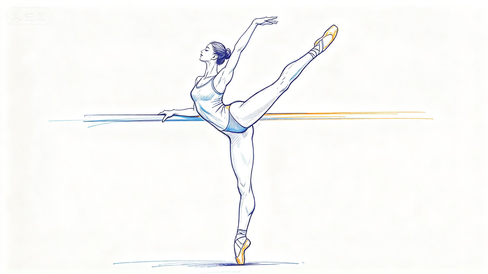
舞者追求的不是瘦，而是足够轻同时足够强
这个比例一高，启动更快，停止更快，突然变向更容易，跳得更高，出现一点误差也能立刻拉回来。
战斗机其实也是同一个道理。
一架战斗机明明十几吨、几十吨，但高速爬升、翻滚、急转弯的时候，我们仍然会觉得：
真轻快。
战斗机当然一点都不轻。
只不过它能够产生巨大的推力、升力和控制力，所以依然可以获得很高的线加速度和角加速度。
所以人视觉上感受到的"轻"，很多时候并不是质量本身。
而是：
这个东西拥有多少力量，去支配自己的质量。
所谓轻盈，不是没有力量。
恰恰相反：
是力量强到让你看不见力量。
而所谓"丝滑"，其实也不只是动作轨迹平滑。
人的动作之所以丝滑，我觉得至少有两个原因。
第一，人对"这个动作到底应该出多少力"的判断更准。
大脑会根据身体状态、物体重量和过去经验，提前估计需要多大的力。
第二，人的肢体更轻，惯量更小，所以即使判断错了一点，也能够更快改回来。
这两件事叠在一起，就是：
判断得准，改得又快。
足球也是一个特别好的例子。
比如梅西带球过人，真正厉害的并不是他一直以最高速度往前冲。
恰恰相反，他最厉害的地方之一就是：
起停、变向。
一方面，他对触球力度的控制非常精确。球不能踢得太远，也不能太近，每一次触球，都要让球恰好出现在下一步身体最舒服的位置。
另一方面，他不断改变自己的运动状态：
启动。
减速。
再启动。
突然停顿。
突然变向。
对手其实也在预测。
看到梅西身体向左，对手就开始把重心移向左边；看到他加速，对手就准备跟着加速。
但就在防守者刚刚建立完预测的时候：
梅西变了。
所以足球里最漂亮的过人，与舞蹈里"若危若安，若往若还"的美感，其实有点像。
都是先让别人相信你下一步会这样运动，然后在最后一瞬间改变答案。
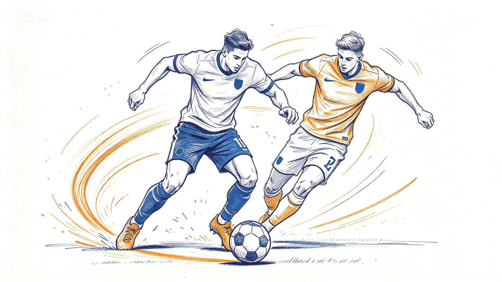
梅西式过人：先让防守者相信你的下一步，再在最后一瞬改变答案
而真正的丝滑，也不是永远匀速、永远平稳。
恰恰相反，最丝滑的动作里可能藏着大量快速的加速、减速、变向和纠偏。
只是这些调整太准确、太及时，所以我们看不见修正。
我们只觉得：
顺。
人疲惫以后容易抖，也是同一道理。
不是突然不会控制了，而是：
控制余量没了。
所以"毫不费力"其实是一种很奢侈的状态。
只有真正有余力的人，才有资格看起来毫不费力。
这时候再回来看看机器人，就明白为什么问题麻烦了。
今天大多数机器人的执行器仍然以电机为主。
电机要获得更大的扭矩，需要更大的电流，但铜损近似满足：
Pₗₒₛₛ = I²R
电流增加，发热会迅速增加。
于是工程上常见的一个办法就是让电机高速转，再通过减速器把速度换成扭矩。
扭矩确实大了。
问题是：
减速器也不是空气。
它有重量，有惯量，有摩擦。
所以机器人硬件特别容易掉进一个循环：
力不够，加东西。
有力了。
但是更重了。
更重以后，又需要更大的力。
所以机器人本体真正困难的事情之一，就是：
又轻，又强。
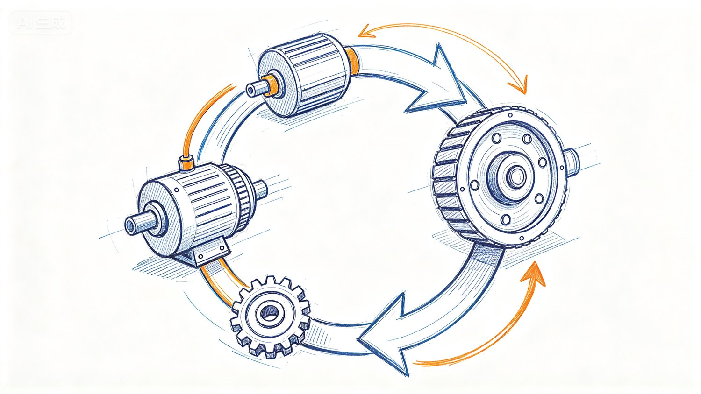
机器人执行器陷入循环：加力就要加重量，加重量又需要更大的力
做一个并不严格、但非常直观的比较。
UR5e 机械臂的工作半径大约 850 mm，额定负载 5 kg，本体重量 20 kg 左右。
而成年人的一条完整上肢只占总体重大约 5% 左右。一个 60 kg 的人，一条手臂大约 3 kg 上下。
也就是说：
20 kg 对 3 kg。
大约差：
6～7 倍。
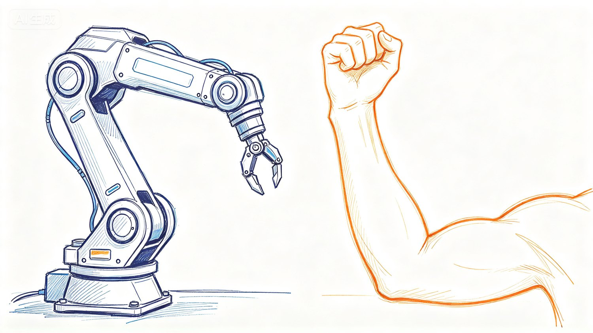
20 kg 的机械臂与 3 kg 的人体上肢对比
当然，这绝不是说"机器人严格比人差 7 倍"。
人的手臂和工业机械臂承担的任务完全不同，持续负载、寿命、重复精度、安全系数也不能直接比较。
但作为一个工程直觉，它已经很说明问题：
我们今天为了获得类似尺度的机械操作能力，往往要背负远比生物肢体更大的自身重量。
而且，四肢的轻量化还不是最难的。
更难的是：
灵巧手。
人的手很小，却塞进了大量关节、肌腱、触觉和精细控制能力。
机器人如果要复制这件事情，一只灵巧手既要有很多自由度，又要有足够大的抓握力；既要高速响应，又要精细力控；还要在很小的空间里塞执行器、减速机构、传感器和电子系统。
这些东西每一样都要重量。
更麻烦的是：
手在整条手臂的最末端。
越靠末端的重量，对整条手臂的惯量影响越大。
所以现在解决灵巧手轻量化的一个重要方向，其实非常朴素：
抄人的作业。
人没有把所有负责手指发力的大块肌肉都塞进手指里。
很多真正负责发力的肌肉长在前臂，力量通过长长的肌腱传到手指。
机器人也可以这么做。
把较重的电机放到前臂，甚至更靠近身体的位置，再通过绳索、腱索把力量传到手指。
这就是：
绳驱、腱驱传动。
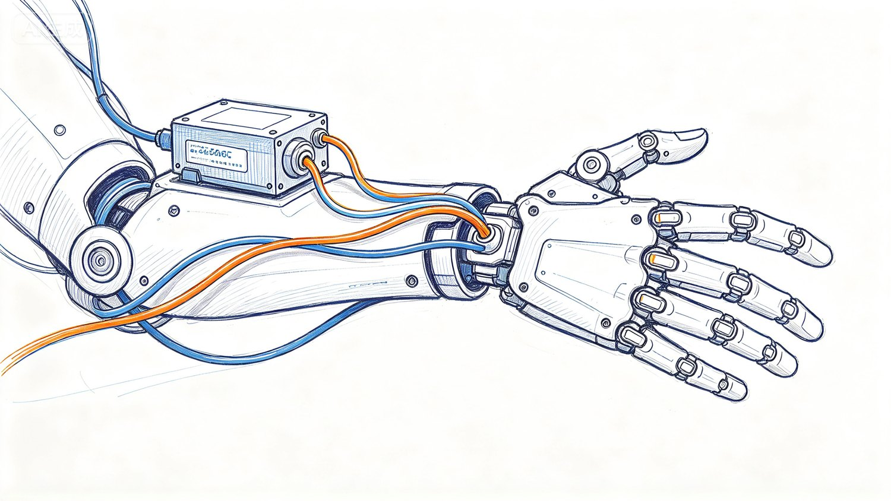
灵巧手的腱驱方案：把重电机放到前臂，用腱索把力量传到指尖
看起来是机器人工程师想出的聪明办法。
其实生物进化早就想到了：
真正需要高速运动的地方，要尽量轻；真正沉重的动力源，最好往身体中心放。
● ● ●
● ● ●
四、看的不是舞，也是生命力与智能水平
所以说到最后，我越来越觉得：
机器人跳舞其实是一个非常好的测试。
因为舞蹈并不是一种孤立的能力。
一个人跳舞好看，往往意味着她的身体协调、平衡、力量控制、反应速度、起停和变向能力都很好。所以通常来说，这样的人干起很多需要身体配合的事情，也会显得更麻利、更灵活。
反过来也一样。
一个机器人跳舞不好看，往往不只是审美上差一点。
如果它跳舞的时候起停慢、变向迟、力度控制不够准、重心调整也不够快，那么这些问题换到别的任务里，通常也不会凭空消失。
换到足球场上，大概也踢不过梅西。
换到厨房、医院、仓库和家庭里，也容易显得：
笨手笨脚。
因为舞蹈、足球和干活，看起来完全不同，底层却都在考类似的能力：
能不能准确判断该出多少力，又能不能在下一瞬间迅速起停、变向和纠错。
而前面舞者体重的问题，在机器人身上还有另外一层意义。
对于舞者来说，体重大不是不能完成动作，而是完成同样的跳跃、落地、急停、变向时，身体往往要承担更大的机械负荷。
对于机器人来说也是一样。
机器人重，并不代表它不能跑快、不能跳、不能急停。
问题在于：
同样的动作，质量越大，一旦出错，代价也越大。
速度一样，机器人越重，携带的动量越大。
动能则满足：
Eₖ = ½mv²
所以一个很重的机器人当然也可以跑得很快。
但跑快以后如果撞到人呢？
如果撞到桌子呢？
如果自己摔倒呢？
质量越大，碰撞和跌倒时需要处理的能量也越大。
这就和舞者是同一个道理：
体重并不只决定动作能不能做，也决定做错以后要付出多大的代价。
对于舞者，这个代价往往是关节、肌腱和软组织的伤病风险。
对于机器人，这个代价就变成了：
人机安全。
所以轻量化这件事特别有意思。
它不仅能让机器人起停更快、变向更灵活、动作更像生命。
它还让机器人即使出现控制误差，也没有那么危险。
换句话说：
轻，是性能。
轻，也是安全。
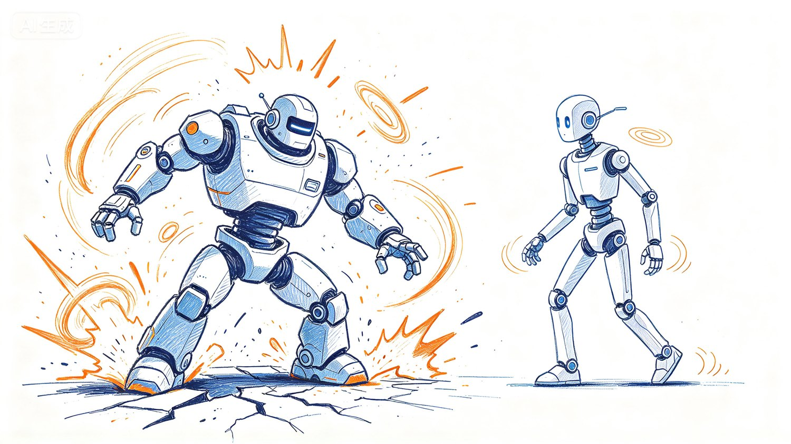
轻是性能也是安全：更轻的机器人出错时携带的动能更小
所以机器人一旦开始跳舞，很多平时藏在参数表里的东西就突然藏不住了。
你让它跟一个真正会跳舞的人站在一起跳两分钟，人眼自己就会告诉你很多东西。
它到底重不重。
力量够不够。
反应快不快。
有没有余力。
快失去平衡的时候能不能迅速回来。
动作到底是活的，还是像预先编好的一套广播体操。
所以跳舞看的不只是舞。
看的其实是：
一个智能生命控制自己身体的水平。
这也是为什么我觉得今天讨论具身智能，不能永远只聊"大脑"。
大模型当然重要。
VLA 很重要。
强化学习很重要。
World Model 也很重要。
但"具身智能"最后还有两个字：
身体。
一个再聪明的大脑，如果背着一个太重、太慢、控制余量不足的身体，它能够做到的事情仍然会被身体限制。
所以机器人硬件非常核心的两个方向，就是：
轻量化。
和：
高功率密度。
于是这里又出现了一个听起来很不正经，但其实挺有工程道理的结论：
跳舞好看的小姐姐，因为出色的力量与重量比，服务起人来反而更安全。
她能快，是因为有力量。
她能稳，也是因为有力量。
她看起来毫不费力，还是因为有力量。
但与此同时，她没有为了获得这些力量，把自己堆成一台两百公斤的机器。
这大概就是下一代服务机器人真正要追求的：
更轻。
更强。
更快。
更柔顺。
也更安全。
所以再回过头去看《洛神赋》：
翩若惊鸿，婉若游龙。
动无常则，若危若安；
进止难期，若往若还。
古人当然不知道 World Model，不知道 torque density，不知道 reinforcement learning，更不知道 humanoid actuator。
但他们很早就知道：
什么样的运动，看起来像生命。
而这也让我越来越觉得，人类所谓的审美，并不只是一种莫名其妙的主观感受。
强大的审美，本来就建立在强大的感知之上。
我们从一个动作里看到力量、质量、惯性、情绪和意图。
我们通过别人的身体，重新体验自己的身体。
一个几十公斤重的人明明站在地球上，我们却觉得她失去了重量。
明明是一个人。
我们却看见：
惊鸿。
游龙。
所以，看小姐姐跳舞，确实可以算是一项高级的智力活动。
表面上是在看美。
其实是在用生命漫长进化留下来的感知能力，理解另一个生命，也理解这个世界。
同样的道理，今天机器人行业到处都是 Demo、发布会和宣传片，每个人都在告诉你：
这个机器人已经很厉害了。
但也不用全听。
你可以自己看看。
看它怎么走。
怎么停。
怎么转身。
怎么受到扰动以后重新站稳。
怎么摔。
怎么起来。
最后，再看看它怎么跳舞。
人类这套古老的感知系统，有时候比宣传片诚实得多。
● ● ●
这个时代有点像《盗梦空间》。
到处都是故事，也到处都是别人希望你相信的世界。
所以每个人最好还是给自己留一点独立的判断。
就像电影里的那枚陀螺。
每个人，都应该有一个属于自己的陀螺。
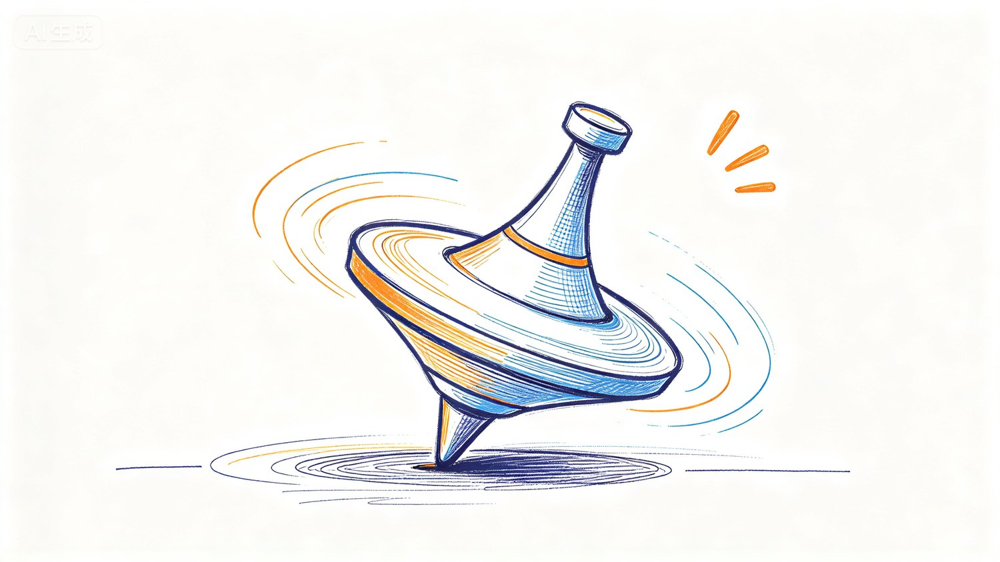
一枚旋转的陀螺：用来分辨自己究竟在不在别人的梦里